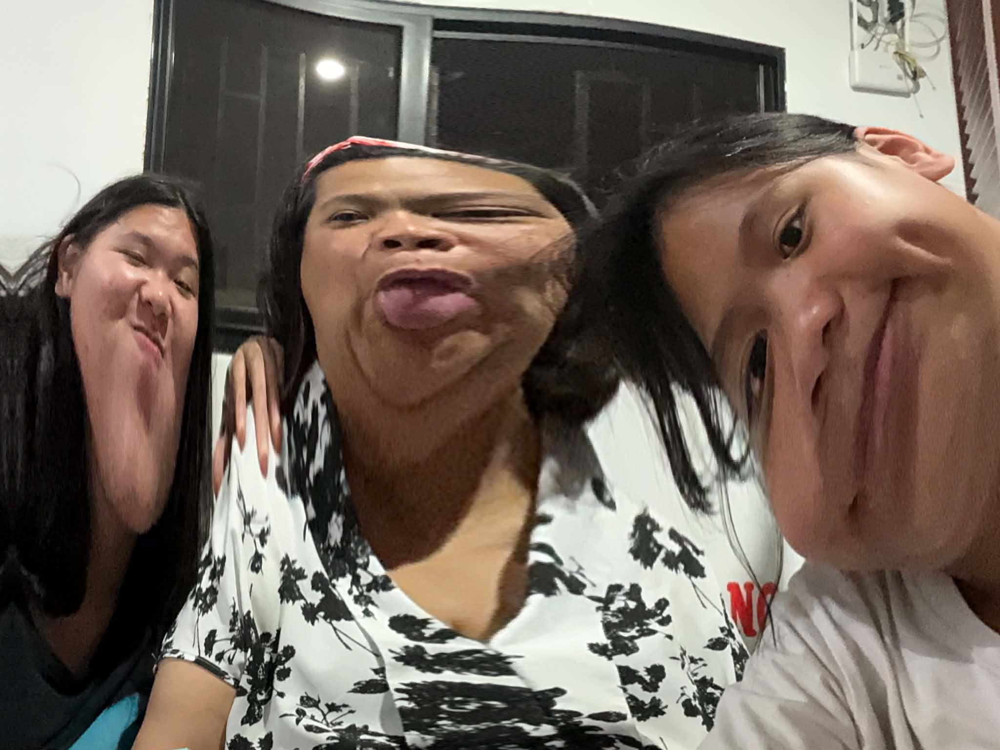
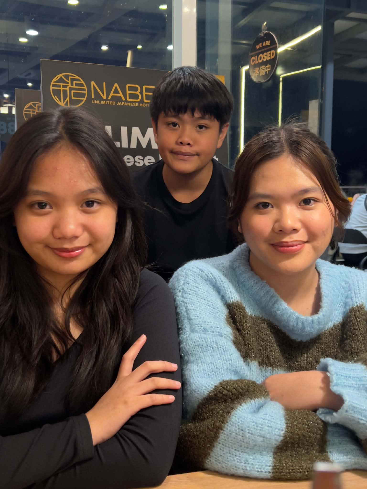

The People Who Raised Me ♡
Home isn't perfect, but it's still home.

Silly moments ♡
Good food, good people

My favorite people ♡

All the laughter ♡
Always us ♡
One thing you'll probably notice about my family is our faces. We've always been misunderstood because of our resting facial expressions. People often think we're angry or in a bad mood, when in reality we're simply existing.
It's funny how something so small creates so many first impressions. Once people get to know us, they'll realize we're loud, playful, and full of laughter.
Every birthday, Christmas, and family gathering becomes one of my favorite memories. A table full of food, everyone talking at once, endless teasing, and laughter that somehow gets louder every year reminds me what home truly feels like.
“Love isn't always loud. Sometimes it's simply showing up for each other.”